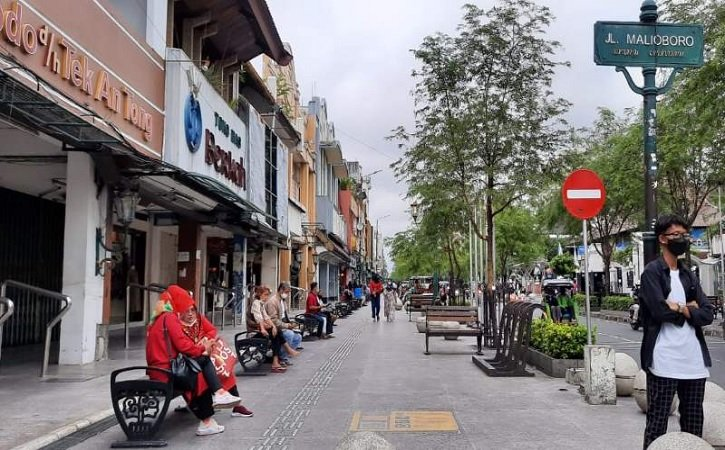

Heha Sky View
Heha Sky View dengan pemandangan terbaik kota Yogyakarta, terletak di kawasan perbukitan Gunungkidul berjarak 40 menit dari pusat kota.

Jalan Malioboro
Jalan Malioboro merupakan salah satu jalan dari tiga jalan di Kota Yogyakarta yang membentang dari Tugu Yogyakarta sampai titik nol.

Pantai Kuta
Candi Borobudur adalah sebuah candi Buddha yang terletak di Borobudur, Magelang, Jawa Tengah, Indonesia. Candi ini terletak kurang lebih 100 km di sebelah barat daya Semarang, 86 km di sebelah barat Surakarta, dan 40 km di sebelah barat laut Yogyakarta.